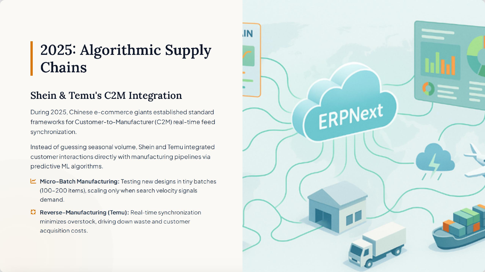
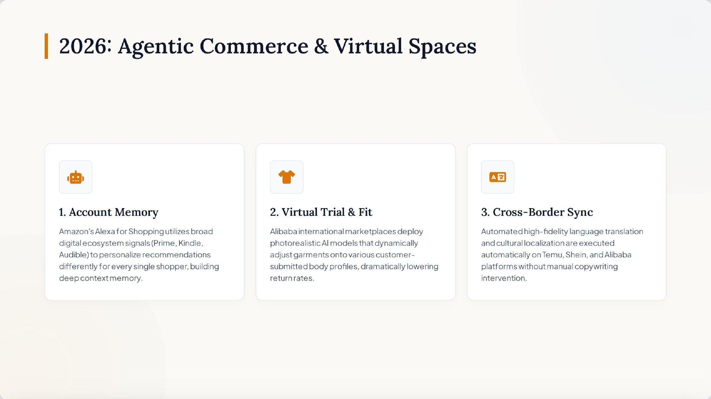

2024
Semantic discovery becomes the new storefront
Amazon's Rufus and COSMO move shopping beyond keyword matching toward
conversational, intent-aware product discovery. eBay applies generative AI to
reduce seller friction through assisted listing creation.
Costco implication: Create a trusted member assistant for missions such as household stocking, event planning, and value comparison across a curated assortment.

2025
Customer signals move upstream
Temu and Shein demonstrate how demand feedback can inform sourcing,
production, inventory, and replenishment through Customer-to-Manufacturer
operating models and smaller test batches.
Costco implication: Connect member behavior, regional warehouse demand, and purchasing signals to forecasting while preserving buyer judgment.

2026
Shopping evolves from answers to action
Persistent agents can remember preferences, coordinate multi-step purchases,
support virtual product experiences, and connect customer journeys across
channels and markets.
Costco implication: Develop an opt-in assistant for repeat purchases, coordinated bundles, and online-to-warehouse planning—with clear consent and privacy controls.